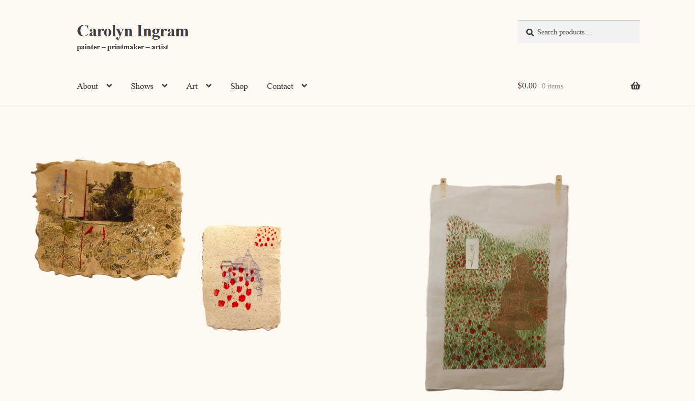

Check out Bodewadmi Ndaw, a documentary by Davis Henderson. It may be the only documentary about the language of the Potawatami nation, and is made by a member of the tribe. It will be showing at The Tube Factory gallery in Indianapolis starting March 7
painter - printmaker - artist: Carolyn Ingram
Give me one billion dollars <3 or the domain name gets it